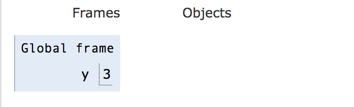
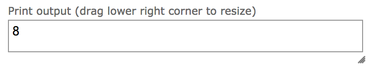
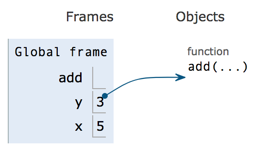
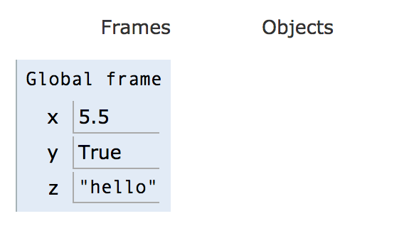
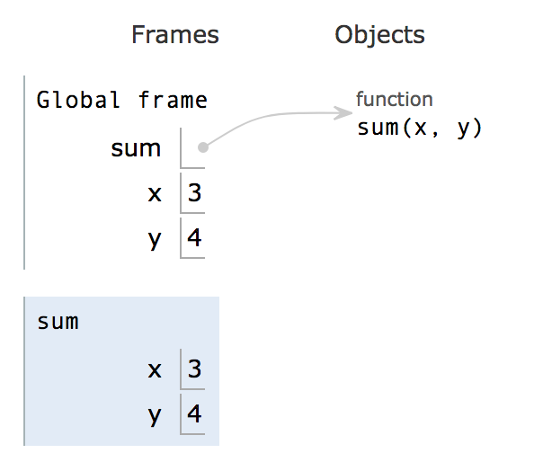
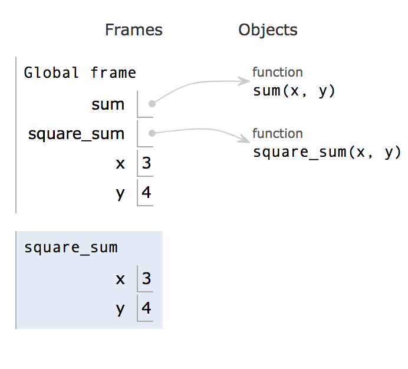
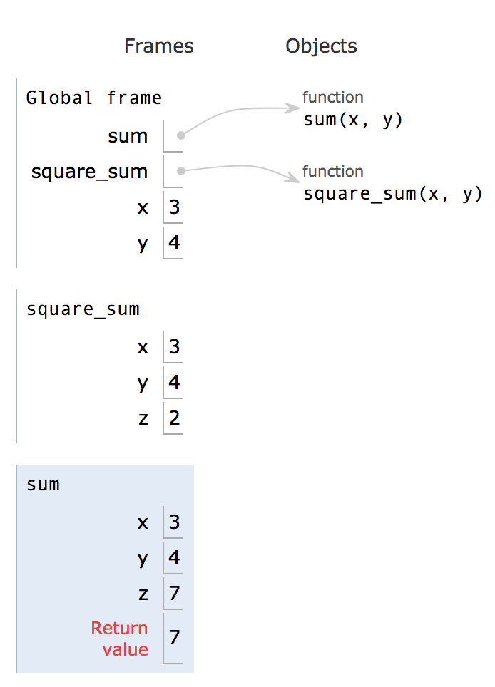

Lab 3 Solutions
Introduction
In this lab, we will introduce you to environments and explore higher order functions (HOFs).
Python Tutor
Python Tutor is a website that allows you to write Python code in your web browser and see it visualized step by step. Before we explain more, let’s experiment with it a little. First, head to the Python Tutor website.
Copy and paste this code snippet into the box:
y = 3
x = 5
z = y + x
print(z)Press “visualize execution”.
You can press the “forward” and “back” buttons to step forward or backwards in the code. Every time you step forward, Python will run that line of code. Notice the legend on the bottom left of the visualizer that tells you what the color of the arrows mean.
You may notice that when you press the forward button for the first time, something pops up on the right side of the screen.

Given the line that you just ran, what do you think this diagram means? Try running a few more lines.
What Python Tutor is doing is showing you exactly what each variable is and what its value is., It shows you the output of the print statement in the box above the diagram.

What’s the difference between the value that appears in the interpreter after evaluating an expression and the output displayed by a print statement?
The value that appears after evaluating is a feature that only the interpreter has. When you actually run the code from a file, that return value does not get printed. The print statement actually does print directly to your terminal.
Python Tutor is a great tool because it helps you understand exactly what your code is doing and also keeps track of what variables’ values are along the way. If you ever have trouble understanding what your code is doing, or finding a bug, pull up python tutor and step through it!
When we assign variables, Python Tutor visualizes this with the variable’s name and a box next to it with the variable’s value. This is just what a variable is! Something that can get assigned a value.
The frame is called “global” for a reason. We will explain that later on.
Let’s throw a function in there. Copy and paste this into the Python Tutor:
from operator import add
y = 3
x = 5
z = add(x,y)
print(z)If you step until step 5, we see that there is something under the “objects” category.

Add is a function, and functions live in object land. We denote which names correspond to which functions with an arrow.
You can think of everything in “frame land” as a box. The box holds something, but is not the thing itself. Some boxes hold integers directly, like the values of x and y in the above image. Other boxes hold more complicated things like functions which cannot be stored directly in the box. Instead, the box holds a pointer to the function which actually lives in object land. In this lab, we are not worried about that, we want you to pay attention to the boxes.
What about floats, booleans, and strings? They also live inside the box, as seen below.

Now that you understand a little bit of how Python Tutor works, let’s write a function to visualize.
Functions and Python Tutor
Let’s see what function calls look like in the Python interpreter.
Paste this code into the interpreter. If you are not in edit mode, click the “edit this code” hyperlink.
def sum(x,y):
z = x + y
return z
x = 3
y = 4
z = sum(x,y)
a = z + 1Now step through the code. Notice in step 5 something interesting happens. A new frame pops up and the execution arrow miraculously moves all the way to the first line. How did we get back there? Think about what would cause this jump before reading the answer below.
When we call the sum function, we need to step through the function itself and execute all of its lines. Where is the function defined? In line 1! Thus, the python interpreter needs to go back there and step through each individual line.

This new frame seen above is a local frame. It is a frame for the sum function that was just called. Everything that happens inside the sum function will be shown inside sum’s local frame.
Step through the rest of the code to see what happens.
Notice that between steps 8 and 9, the function jumps from line 3 to line 6. What’s that all about? Why doesn’t it just go straight to line 4?
Remember how the interpreter had to jump into the sum function to execute it? Well, when it finishes the function, it needs to jump back to the line it was running before the function. That line was line 6.
Now, let’s see what happens if a function calls a function. Copy the following code into python tutor.
def sum(x,y):
z = x + y
return z
def square_sum(x,y):
z = 2
return sum(x, y)**z
x = 3
y = 4
square_sum(x,y)Now press “forward” 2 times.
You may notice that during steps 1 and 2, the visualizer skips over the bodies of the functions. This is because the functions have not been called yet, so the python interpreter will not unpack the function and go into it. It only notes that there are two functions named sum and square_sum, and assigns them to functions living in object land.
Try clicking forward to step 6. In step 6, the interpreter enters the square_sum function. See the new local frame that appeared.

Fun fact: Because the frames are stacked this way, we call the group of frames the call stack.
If you click forward one more time, you’ll see z pop up, which is set to 2. Then, we enter the sum function. Step to step 11.

At this point, you see that we have many variables all names the same thing. How does Python know which variable we are referring to when we want the value of “x”? Is it the first, the second, or the third?
This is where scope comes in.
Everything inside a function’s local frame is said to be in its “scope”. A functions scope contains all the variables and functions it can access/manipulate/use.
There are two big categories for scope: local and global.
- Global scope is just whatever lies in the global frame.
- Local scope is the scope of any individual function.
When we are in the sum function, when we ask for z, we will retrieve z in sum’s local frame. When we are in square_sum, we will retrieve the z in square_sum’s local frame.
Let’s continue exploring our function.
After returning from sum, we go back to the line where we called sum: 6. Now that we have the result of sum (7), we can raise it to the power of z, which is 2, and return it.
Now that you’ve seen a bit of defining functions, calling functions, and how both look like when they are visualized in python tutor, we will move on to learning about text editors.
Scopes and Nested Functions
Let’s see what nested function calls look like in the Python interpreter.
Paste this code into the interpreter or follow this link Ex1
def bonus(score):
previousScore = score
multiplier = 1
if score > 25:
multiplier = 2
score *= multiplier
return score
print(bonus(score))
print(previousScore)Now step through the code. Why does it error out? The error message reads
NameError: name 'previousScore' is not definedBut didn't we define previousScore in the body of the bonus function? We did, but that previousScore is only defined in the scope of the function. So it is not accessible outside in the global scope.
Let's try another function Ex2
def totalScore(score):
multiplier = 2
def bonus(score):
if score > 25:
score *= multiplier
else:
score /= multiplier
return score
return score, bonus(score)
score = 12
totalScore(score)
print(score)There's a lot to unpack here. We purposefully gave the variables the same names so you can see how Python lookups values for variables. The general principle is that python looks for the value in the current scope first. If it can't find the variable there, it checks it's parent scope, and the parent's parent, all the way up to the global scope. If the variable still isn't found there, an error is raised. Walk through the lookup for multiplier on line 7 in your head as a sanity check.
Functions as Arguments (Funargs)
So far we have used several types of data - ints, floats, booleans, strings, lists, tuples, and numpy.arrays. We perform operations on them by constructing expressions; we assign them to variables; we pass them to functions and return them as results. So what about functions themselves? So far we have called them, that is we applied them to arguments. Sometimes we compose them - just like in math; apply a function to the result of applying a function. You did that several times above.
In modern programming languages like Python, functions are first class citizens;
we can pass them around and put them in data structures. Take a look at the following
and try it out for various functions that you have available in the .py file for this
lab.
>>> square(square(3))
81
>>> square
<function square at 0x102033d90>
>>> x = square
>>> x(3)
9
>>> x(x(2))
16
>>>Higher Order Functions
Thus far, in Python Tutor, we’ve visualized Python programs in the form of environment diagrams that display which variables are tied to which values within different frames. However, as we noted when introducing Python, values are not necessarily just primitive expressions or types like float, string, integer, and boolean.
In a nutshell, a higher order function is any function that takes a function as a parameter or provides a function has a return value. We will be exploring many applications of higher order functions.
Let's think about a more practical use of higher order functions. Pretend you’re a math teacher, and you want to teach your students how coefficients affect the shape of a parabola.
Let's open Python Tutor again in a new tab!
Paste this code into the interpreter:
def define_parabola(a, b, c):
def parabola(x):
return a*(x**2) + b*x + c
return parabola
parabola = define_parabola(-2, 3, -4)
y1 = parabola(1)
y2 = parabola(10)
print(y1, y2)Now step through the code. In the define_parabola function, the coefficient values of 'a', 'b', and 'c' are taken in, and in return, a parabolic function with those coefficient values is returned.
As you step through the second half of the code, notice how the value of parabola points at a function object! The define_parabola higher order nature comes from the fact that its return value is a function.
Another thing noting is where the pointer moves after the parabola function is called. Notice that the pointer goes to line 2, where parabola was originally defined. In a nutshell, this example is meant to show how a closure is returned from the define_parabola function.
Question 1: Flight of the Bumblebee
Write a function that takes in a number n and returns a function
that takes in a number m which will print all numbers from 0
to m - 1 (including 0 but excluding m) but print Buzz!
instead for all the numbers that are divisible by n.
def make_buzzer(n):
""" Returns a function that prints numbers in a specified
range except those divisible by n.
>>> i_hate_fives = make_buzzer(5)
>>> i_hate_fives(10)
Buzz!
1
2
3
4
Buzz!
6
7
8
9
"""
"*** YOUR CODE HERE ***"
def buzz(m):
i = 0
while i < m:
if i % n == 0:
print('Buzz!')
else:
print(i)
i += 1
return buzzUse OK to test your code:
python3 ok -q make_buzzerQuestion 2: Intersect
Two functions intersect at an argument x if they return equal values.
Implement intersects, which takes a one-argument functions f and a value
x. It returns a function that takes another function g and returns whether
f and g intersect at x.
def intersects(f, x):
"""Returns a function that returns whether f intersects g at x.
>>> def square(x):
... return x * x
>>> def triple(x):
... return x * 3
>>> def increment(x):
... return x + 1
>>> def identity(x):
... return x
>>> at_three = intersects(square, 3)
>>> at_three(triple) # triple(3) == square(3)
True
>>> at_three(increment)
False
>>> at_one = intersects(identity, 1)
>>> at_one(square)
True
>>> at_one(triple)
False
"""
"*** YOUR CODE HERE ***"
def at_x(g):
return f(x) == g(x)
return at_xUse OK to test your code:
python3 ok -q intersectsQuestion 3: Funception
Write a function (funception) that takes in another function func_a and a number start and returns a one-argument function (func_b) that takes in the stop value.
func_b should take the following into consideration the following in order:
- Take in the stop value.
- If the value of
startis less than 0, return immediately with no output. - If the value of
startis greater than stop, applyfunc_aonstartand return the result. - If not, apply
func_aon all the numbers from start (inclusive) up to stop (exclusive) and return the product.
def funception(func_a, start):
""" Takes in a function (function A) and a start value.
Returns a function (function B) that will find the product of
function A applied to the range of numbers from
start (inclusive) to stop (exclusive)
>>> def func_a(num):
... return num + 1
>>> func_b1 = funception(func_a, 3)
>>> func_b1(2)
4
>>> func_b2 = funception(func_a, -2)
>>> func_b2(-3)
>>> func_b3 = funception(func_a, -1)
>>> func_b3(4)
>>> func_b4 = funception(func_a, 0)
>>> func_b4(3)
6
>>> func_b5 = funception(func_a, 1)
>>> func_b5(4)
24
"""
"*** YOUR CODE HERE ***"
def func_b(stop):
i = start
product = 1
if start < 0:
return None
if start > stop:
return func_a(start)
while i < stop:
product *= func_a(i)
i += 1
return product
return func_bUse OK to test your code:
python3 ok -q funceptionLists and HOFs
Question 4: Match Pairs
Return a list containing all pairs of distinct elements that satisfy the function fn. We say the pair [a, b] satisfies a function fn when calling fn(a, b) returns True. Also note that the pair [1, 1] should never be included in the final pairing since its elements are not distinct.
For example, all the possible pairs with disinct elements of [1, 2, 3] are [1, 2], [1, 3], [2, 1], [2, 3], [3, 1], [3, 2] but only [1, 2], [2, 1], [2, 3], [3, 2] satisfy the condition that the sum of their elements is odd.
Assume that all elements of lst are distinct.
>>> lst = [1, 2, 3]
>>> def sum_to_odd(a, b):
... return (a + b) % 2 == 1
>>> match_pairs(lst, sum_to_odd) # pairs can be returned in any order, this is an example
[[1, 2], [2, 1], [2, 3], [3, 2]]More examples can be found in the doctests.
def match_pairs(lst, fn):
"""
>>> lst = ["bobby", "frodo", "sally", "kyoko", "beth"]
>>> def same_last_char(a, b):
... return a[-1] == b[-1]
>>> sorted(match_pairs(lst, same_last_char)) # sorted is used for testing
[['bobby', 'sally'], ['frodo', 'kyoko'], ['kyoko', 'frodo'], ['sally', 'bobby']]
>>> def same_first_char(a, b):
... return a[0] == b[0]
>>> sorted(match_pairs(lst, same_first_char))
[['beth', 'bobby'], ['bobby', 'beth']]
"""
"*** YOUR CODE HERE ***"
matches = []
for i in lst:
for j in lst:
if i != j and fn(i, j):
matches.append([i, j])
return matchesUse OK to test your code:
python3 ok -q match_pairs